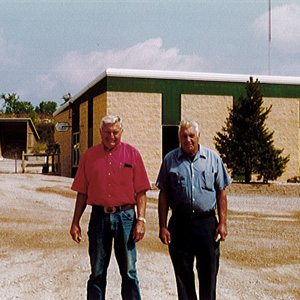

The History of Johnson Sand & Gravel
Johnson Sand & Gravel was established by Robert and Wayne Johnson in 1957, under the name Highway Machinery Co. The two of them were hardworking, determined, and had families to provide for. They grew enamored by the fresh, quickly-growing industry. So while capital and assets were at a minimum, the Johnson boys purchased one track loader and two dump trucks.
As they worked and learned over the years, they grew adept in the fine art of aggregate production and simultaneous mine operation. The two man operation of Highway Machinery Co., would ultimately grow larger than either of them could have imagined. Johnson Sand & Gravel.
In furthering their expertise of the sand and gravel mining process, the Johnsons also learned about the importance of mining in a sustainable fashion. Today, Johnson Sand & Gravel has among the highest acreage of restored properties in southeastern Wisconsin. Many past JSG mines are now parks, business parks, residential subdivisions, agricultural fields, parking lots, the Vander Heyden Farm on Hwy JJ, west of Springdale Road in the town of Pewaukee. As owner and operator, we crushed, screened and washed gravel for various projects, including road base for Interstate 94, the backfill and road base for the Milwaukee County Stadium and Stadium Interchange. Mining operations occupied the North and South side of Hwy JJ as well: Operations continued on this property for nearly 20 years. We developed this land - overseeing grading, road and sewer construction and the sale of the improved lots. Today this 400 acre parcel is the Bluemound Industrial Park.
The Fox/Golden Guernsey and Priedeman Farm that collectively encompassed 88 acres on the Southwest corner of Hwy 18 & Hwy 164 South on the Southwest corner.
The owners wanted their land excavated and restored to usable land. For twelve years we screened and crushed gravel on the site. When the restoration was completed, the property became a cornerstone in Waukesha's retail arena. We now know this corner as the home of the Wilde and Boucher car dealerships.
Elmbrook Church in Brookfield. This site is situated on 40 acres of excavated and restored land. Johnson Sand & Gravel produced backfill materials and compensated the landowner for the exclusive right to the raw materials. This operation ran six years.
Waukesha County Technical College. This 80 acre site was excavated and restored by Johnson Sand & Gravel in the late 1970's and early 1980's. The operation spanned approximately 9 years. We crushed and screened materials for many projects including Jones Island Treatment Plant and the Hwy 16 reconstruction project.
Galilee Lutheran Church in Pewaukee. This site needed an expanded parking lot. The church arranged to purchase lands to the North on Hwy SS. The landowner needed to prepare the land for the new use, we were contacted and completed the 34 acre parcel in 3 years. Galilee Lutheran Church has since expanded not only its parking lot but also the building facility as well.
Mae's Walke. This Town of Merton site is an upscale residential subdivision. The 105 acres was owned, operated and developed by Johnson Sand & Gravel. To look at this beautiful land, one would not know it was an operating gravel pit for 11 years. We crushed and screened sand and gravel to supply many Wisconsin Department of Transportation bridge and road projects. We supplied asphalt plants and landscape contractors alike. We developed this land as well - overseeing the grading, septic and road construction of the property.
Waukesha County Gravel Pit. In 2003, Johnson Sand & Gravel was awarded the contract to mine and restore the Waukesha County gravel pit. This contract is unprecedented in our area, including not only sand and gravel excavation and land restoration, but also composting. Participating municipalities in Waukesha County brought their yard waste in to be processed and composted for later use during restoration.
While this is a brief representation of the work our company does and is capable of doing, the opportunity to work with a number of landowners, on a variety of reclamation projects throughout Waukesha County, has given us a considerable portfolio of successfully completed projects. We have excavated and restored numerous land parcels ranging in size from 8 to 400 acres. Johnson Sand & Gravel is unique to Southeastern Wisconsin in that we are the only company with this comprehensive history of mined and restored projects.